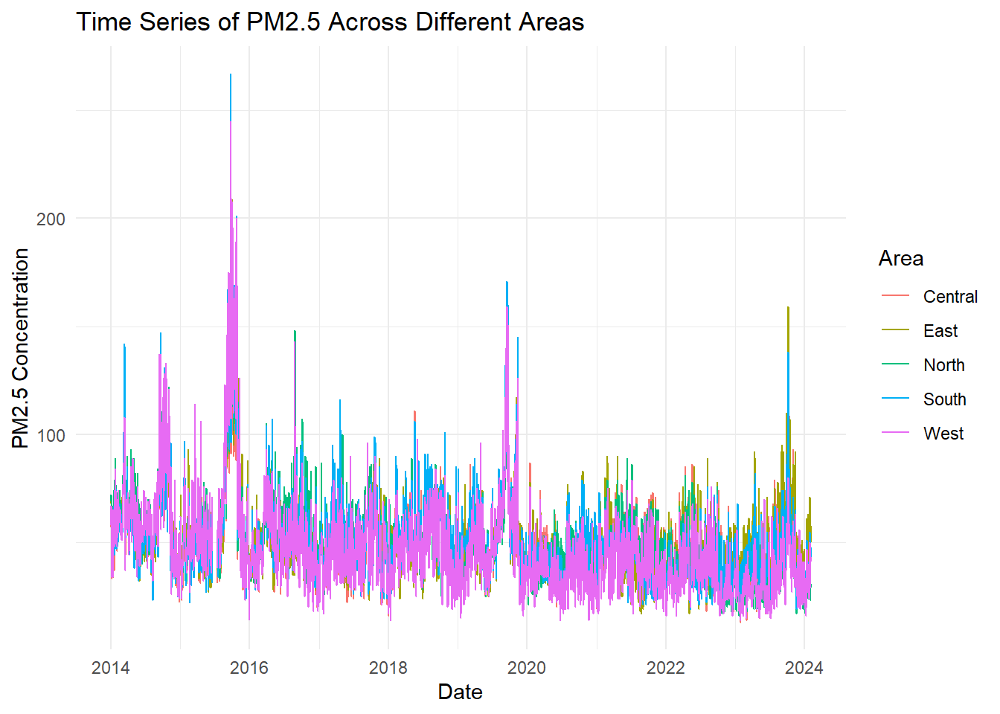
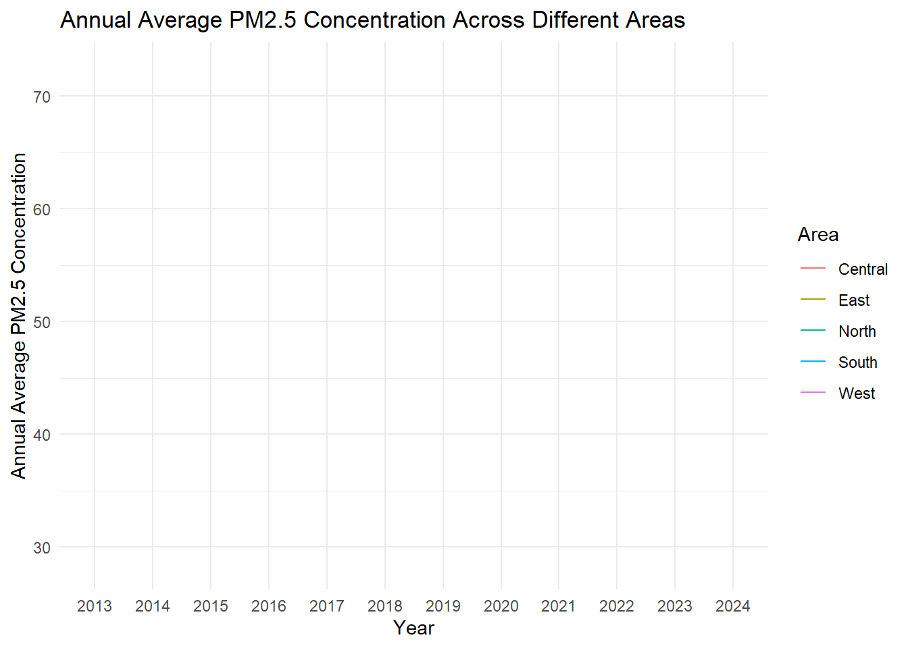
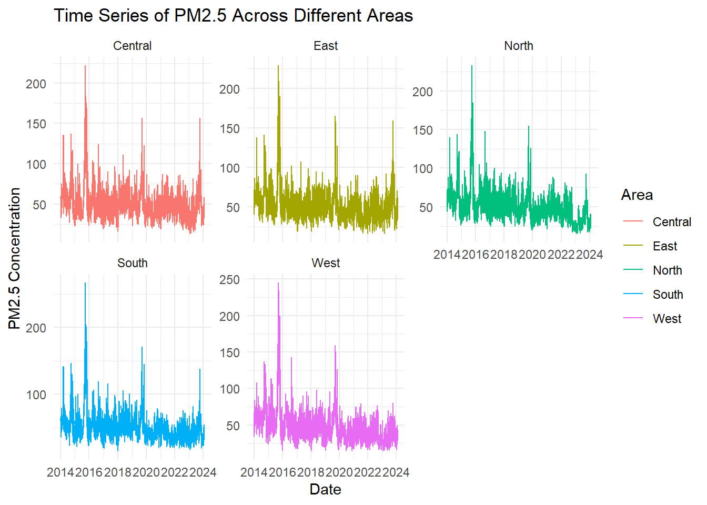
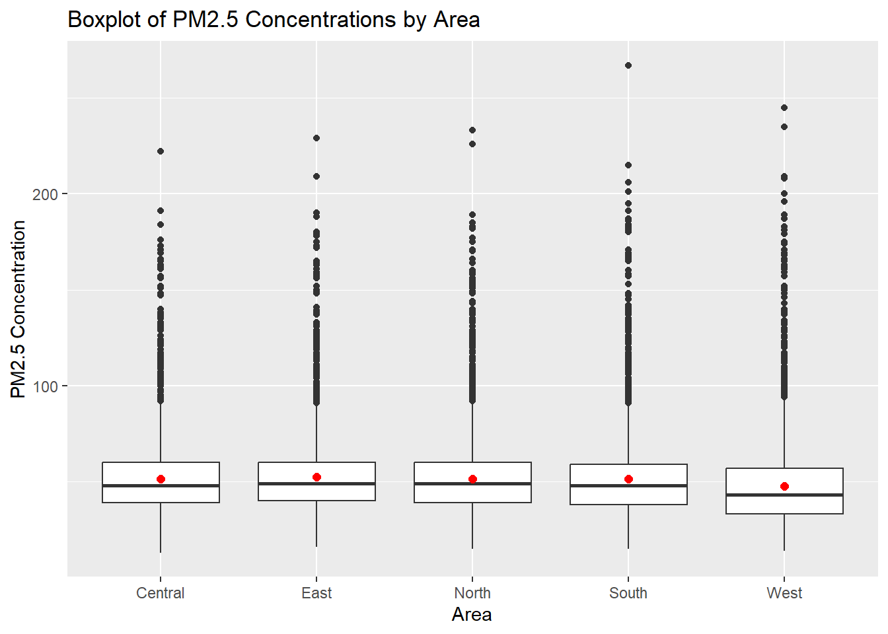

pacman::p_load(tidyverse, haven, ggrepel, patchwork,ggplot2,
ggthemes, hrbrthemes,dplyr,tidyr,knitr,ggridges,lubridate)Project EDA
Installing R packages
Importing data
Pollution <- read_csv("data/pollutants_singapore.csv") %>%
select(Area,date,pm25,psi)Rows: 18390 Columns: 9
── Column specification ────────────────────────────────────────────────────────
Delimiter: ","
chr (2): Area, date
dbl (7): pm25, pm10, o3, no2, so2, co, psi
ℹ Use `spec()` to retrieve the full column specification for this data.
ℹ Specify the column types or set `show_col_types = FALSE` to quiet this message.weather <- read_csv("data/weather_singapore_2014_to_2017.csv", locale = locale(encoding = "ISO-8859-1"))Rows: 7305 Columns: 14
── Column specification ────────────────────────────────────────────────────────
Delimiter: ","
chr (11): Area, Station, Daily Rainfall Total (mm), Highest 30 Min Rainfall ...
dbl (3): Year, Month, Day
ℹ Use `spec()` to retrieve the full column specification for this data.
ℹ Specify the column types or set `show_col_types = FALSE` to quiet this message.weather <- weather %>%
mutate(date = make_date(Year, Month, Day))Data structure
glimpse(Pollution)Rows: 18,390
Columns: 4
$ Area <chr> "Central", "Central", "Central", "Central", "Central", "Central",…
$ date <chr> "2024/2/1", "2024/2/2", "2024/2/3", "2024/1/1", "2024/1/2", "2024…
$ pm25 <dbl> 46, 48, 46, 35, 25, 37, 26, 26, 31, 24, 34, 26, 25, 46, 24, 50, 4…
$ psi <dbl> NA, NA, NA, NA, NA, NA, NA, NA, NA, NA, NA, NA, NA, NA, NA, NA, N…checking duplicates
Pollution[duplicated(Pollution),]# A tibble: 0 × 4
# ℹ 4 variables: Area <chr>, date <chr>, pm25 <dbl>, psi <dbl>Missing values
na_count <- sapply(Pollution, function(y) sum(length(which(is.na(y)))))
na_count Area date pm25 psi
0 0 157 13360 na_count_w <- sapply(weather, function(y) sum(length(which(is.na(y)))))
zero_count_w <- sapply(weather, function(y) sum(y == 0, na.rm = TRUE))
zero_count_w Area Station
0 0
Year Month
0 0
Day Daily Rainfall Total (mm)
0 281
Highest 30 Min Rainfall (mm) Highest 60 Min Rainfall (mm)
312 312
Highest 120 Min Rainfall (mm) Mean Temperature (°C)
312 0
Maximum Temperature (°C) Minimum Temperature (°C)
0 0
Mean Wind Speed (km/h) Max Wind Speed (km/h)
0 0
date
0 drop missing values
Pollution_v2 <- Pollution %>%
drop_na()
sum(is.na(Pollution_v2))[1] 0Converting data type
pollutants <- Pollution %>%
mutate(date = trimws(date), # Remove any leading/trailing whitespace
date = as.Date(date, format="%Y/%m/%d")) # Convert to Datesummary
summary(pollutants) Area date pm25 psi
Length:18390 Min. :2013-12-31 Min. : 13.00 Min. : 13.00
Class :character 1st Qu.:2016-07-10 1st Qu.: 38.00 1st Qu.: 43.00
Mode :character Median :2019-01-19 Median : 48.00 Median : 51.00
Mean :2019-01-18 Mean : 50.79 Mean : 53.74
3rd Qu.:2021-07-29 3rd Qu.: 59.00 3rd Qu.: 59.00
Max. :2024-02-03 Max. :267.00 Max. :240.00
NA's :157 NA's :13360 # filter the data for the area "Central"
central_pollution <- pollutants %>%
filter(Area == "Central")
west_pollution <- pollutants %>%
filter(Area == "West")
north_pollution <- pollutants %>%
filter(Area == "North")
south_pollution <- pollutants %>%
filter(Area == "South")
east_pollution <- pollutants %>%
filter(Area == "East")ggplot(data = pollutants, aes(x = date, y = pm25, color = Area)) +
geom_line() +
theme_minimal() +
labs(title = "Time Series of PM2.5 Across Different Areas",
x = "Date",
y = "PM2.5 Concentration",
color = "Area")Warning: Removed 5 rows containing missing values (`geom_line()`).
# Merge the datasets by 'Area' and the new 'date' column
combined_data <- merge(pollutants, weather, by = c("date", "Area"))
# Create the plot
p <- ggplot(data = combined_data, aes(x = date, y = pm25, color = Area)) +
geom_line() +
facet_wrap(~ Area, scales = 'free_y') +
theme_minimal() +
labs(title = "Time Series of PM2.5 and Rainfall Across Different Areas",
x = "Date",
y = "Concentration / Rainfall")# Convert the date to a Date object and extract the year
pollutants_yr <- pollutants %>%
mutate(date = as.Date(date),
year = factor(year(date)))
# Calculate the average PM2.5 for each area for each year
annual_avg_pm25 <- pollutants_yr %>%
group_by(Area, year) %>%
summarise(annual_avg_pm25 = mean(pm25, na.rm = TRUE))`summarise()` has grouped output by 'Area'. You can override using the
`.groups` argument.print(annual_avg_pm25)# A tibble: 60 × 3
# Groups: Area [5]
Area year annual_avg_pm25
<chr> <fct> <dbl>
1 Central 2013 NaN
2 Central 2014 60.1
3 Central 2015 63.8
4 Central 2016 51.5
5 Central 2017 47.2
6 Central 2018 54.1
7 Central 2019 56.2
8 Central 2020 43.4
9 Central 2021 49.3
10 Central 2022 43.2
# ℹ 50 more rows# Plot the annual average PM2.5 by area
ggplot(data = annual_avg_pm25, aes(x = year, y = annual_avg_pm25, color = Area)) +
geom_line() +
scale_x_discrete() + # This forces the x-axis to be discrete
theme_minimal() +
labs(title = "Annual Average PM2.5 Concentration Across Different Areas",
x = "Year",
y = "Annual Average PM2.5 Concentration",
color = "Area")Warning: Removed 5 rows containing missing values (`geom_line()`).`geom_line()`: Each group consists of only one observation.
ℹ Do you need to adjust the group aesthetic?
ggplot(data = pollutants, aes(x = date, y = pm25, color = Area)) +
geom_line() +
theme_minimal() +
facet_wrap(~ Area, scales = 'free_y') + # Add faceting by area
labs(title = "Time Series of PM2.5 Across Different Areas",
x = "Date",
y = "PM2.5 Concentration")Warning: Removed 5 rows containing missing values (`geom_line()`).
ggplot(data = Pollution, aes(x = Area, y = pm25)) +
geom_boxplot() +
labs(title = "Boxplot of PM2.5 Concentrations by Area",
x = "Area",
y = "PM2.5 Concentration")+
stat_summary(geom = "point",
fun.y="mean",
colour ="red",
size=2)Warning: The `fun.y` argument of `stat_summary()` is deprecated as of ggplot2 3.3.0.
ℹ Please use the `fun` argument instead.Warning: Removed 157 rows containing non-finite values (`stat_boxplot()`).Warning: Removed 157 rows containing non-finite values (`stat_summary()`).
scale_y_continuous(limits = c(0, 300))<ScaleContinuousPosition>
Range:
Limits: 0 -- 300